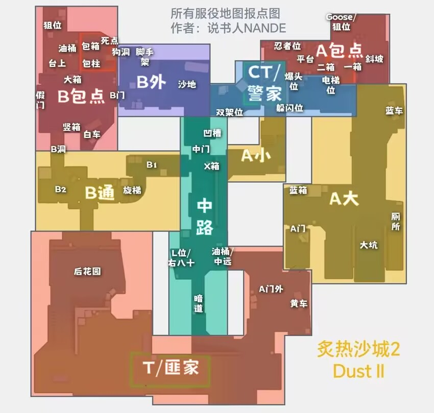

cs炙热沙城二打法概述
先放一张报点图，不过说实话也用不着那么多报点，记住以下常用的就好：（假如看到名字可以想起它在哪，就相当于记住了）

B包点：狙位，大箱，死点，狗洞，白车
B外：脚手架，沙地
B通：B2，B1，旋梯
匪家：后花园
中路：暗道，L位，中远，X箱，中门
A小：躲闪位（我喜欢叫A小箱子）
A包点：忍者位，二箱，一箱，爆头位，电梯位，狙位，斜坡
A大：蓝车，厕所，大坑，蓝箱，A门
第一时间交火点
对于任何一种默认打法来说，首要目的就是拿到最大的图权，哪一方在第一时间交火时胜出了，哪一方就能拿下这片区域的优势，所以这里先从第一时间交火点说起
解释一下第一时间交火点，就是当ct与t第一身位都以最快速度抢占这些点时，双方会在此处交火（所以以下提到的ct和t都是第一身位）
这张地图的第一交火点分别是（中门对狙的不算）：B通-B包，旋梯上-旋梯下，A小/B1-L位/中远，A门-A大拐角，主要的控图也就围绕这些位置展开
B通-B包
ct优势
通常只要t不rushB，这里是不会第一时间交火的，t单摸的人也不会蠢到单人清B包（当然，纯的除外）
这里ct的控图很简单，只需要ct在过B门时给火，随便要不要侦察都可以，只要在火快灭时给烟就行
给烟之后主B的ct可以选择跳竖箱或躲大箱后，架烟即可，我会更推荐跳竖箱，可以拿到B通的信息，如果中路压力过大可以选择去狗洞，让中路队友回警家，这样可以在沙地打中路出的t的交叉
旋梯上-旋梯下
t优势
当ct选择顶B1时，双方会在此交火，这里也是t在rushB时经常翻车的点，t要反制很简单，只要对着旋梯烧个火就行了
假如t在非rushB时要预防这里交火，就需要走暗道的人在暗道的箱子后跳看中门，在封中门烟控制中路时一并把B1控下
A小/B1-L位/中远
均势
当ct顶A小时一般都需要带一个顶B1的，此时暗道和中远都可能会出人（暗道出是劣势），B1的ct需要负责侦察（B1是劣势，地形不好，容易被单摸的匪偷掉），A小的ct由于没有暴露信息主要负责对枪，大部分情况下打掉一个就可以撤了
A门-A大拐角
ct优势
ct和t都抢A大时，双方会在此相遇，此时ct在A大拐角，t在A门里正对A大拐角，需要注意的是，此时双方都没有交火能力（都切刀或切道具）
这里主要讲ct如何控A大，无配合情况下，ct第一身位丢火缩回拐角，由第二身位对枪，或者，ct第一身位给漂移火下大坑，和第二身位打交叉，此时对枪点位就变成了A门/蓝箱（t第一身位一般跳蓝箱）-大坑/A大拐角
更理想的情况是，ct第一身位丢A门火同时第二身位丢出蓝箱火，第一身位再丢反清闪和第二身位双拉
ct默认及打法
一般情况下t是不会有默认的，所以这里就讲下ct的默认，由于本张图ct只有五个出生位，所以ct打默认的位置和出生位是绑定的
ct默认1B1中3A，右边第一个主B，右边第二个中路，中间去A小，左边两个去A大
主B的站住包点内即可，激进点站竖箱上，保守点站狙位，大箱后，团队点站狗洞，卖队友站白车，假如t这把开局不打B的话那这局就和主B的没多大关系了，和米垃圾主B，nuke主铁板的一样，是坐牢位
主中路的主要负责侦察中远和A小，并不负责对枪（沙地m4对中远ak纯属炸鱼，对面eco局或大狙除外），因为这张图在封警家隔断烟前中路压力不大，匪出中路的情况及其罕见
站A小的受个人实力和团队配合影响最大，保守打就是站在A小后点，等中路队友报t上A小或封中门烟后就反烟架枪，假如t没抢A大的话还可以摇一个A大的队友回来，对自己有自信的可以顶A小，顶A小放在下面的打法里讲
A大是沙二这张图最关键的地方没有之一（再次一级是B1，在下面讲顶B1的打法里讲），从总体上看，A大是一个田字形地图，但事实上中路对A大是几乎没有影响的，t即使丢失了中路控制权也可以在中远以优势架住前压的t，这就导致ct丢失A大控制权之后只能通过A平台反清（相当于不能反清），所以说，A大破了就相当于这把t主攻A（大概率不会转点，因为A大要往B转被偷的可能性太多了，t没必要冒这个险），请第一时间支援A包
顶B1
这种打法通常在ct的eco局出现，目的是快速清空B通，要求至少2个ct，风险高
主B的ct可以给出B通假火（烧B洞-B包间左侧的拐角），因为警火范围小的特性不会封住B洞入口，同时也可以给可能在B的t提示"这把烧了B通火，所以不要rush了"，随后主B的压进B洞，当然不给这颗火也是可以的，这颗火主要起心理博弈的作用，对野牛玩家无效
中路侦察的ct就放中路，改为开局进中门贴墙进B1（顶B1的核心），随后直接走旋梯和主B的人夹击B通里的匪
这种打法是警劣势，匪道具占优，前面提到了匪可以通过烧旋梯火来防顶B1，所以这种打法主要是出其不意，通常一把里只能用两三次
顶A小
这种打法通常在双方全起局出现，目的是拿到首杀让t开局减员，最好有两个ct配合，风险低
站A小的在A小箱子上（图上叫躲闪位）给出A小前点烟用于留后路，同时也可以预防可能到来的默认A小火，随后在A小拐角往中路弹一颗闪（往对面中路的墙弹或往A小的墙弹都行，只要能白中路就是有效的，难度也不大），切枪出来刷人即可（短枪就不要顶A小了，老老实实顶B1吧），这时通常可以抓到中远往L位走的t，暗道封中门烟出来的t的timing，假如这局t选择快速上A小，此时也可能看到n个人按住w往A小冲，由于前面打了闪所以可以直接偷正面，通常拿到一个击杀就可以回来了（因为顶完A小中路信息也吃完了，大赚）
假如有一个ct可以配合，这个ct就需要去顶B1，当然，由于主要目的不是清B，所以这个顶B1的只要站住B1架旋梯防t单摸就行，假如顶A小的ct报t上A小的话，这个B1的ct还可以从B1补枪补道具
这种打法是警优势，通常也是ct开局控中路必做的流程，但这种打法要求顶A小的ct击杀效率要高，否则容易把A小直接丢掉
t慢打打法
由于t是进攻方，所以t基本没有默认，要硬说有，那就是控中路，rush的战术就不讲了，感觉没必要讲，所以就讲慢打吧，就当另一种默认
t要控中路时，需要给出中门烟（匪家给或暗道给区别都不大，但要求封满，不然就是沙地ct狙优势点名抽人），有必要时给出A小火（假如ct顶A小不给前点烟的话，那他踩到火基本就是送了）
在第一时间不rush的话，匪通过控中远变相地控住了A门，那么此时控B就需要t单摸，通常一个就好，这个t需要负责保证B包内的ct不会压出来，同时也起到辅助清B1的作用，当控下B1时，中路控制权就基本在t手上了，同时单摸的t也需要在ct顶A小的时候及时通知控中路的队友，或者把队友卖了收掉这个顶A小的ct
以上